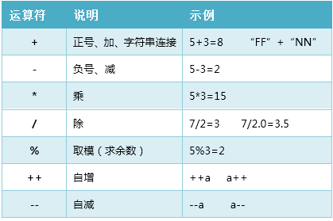
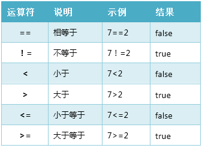
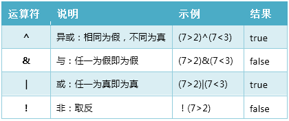
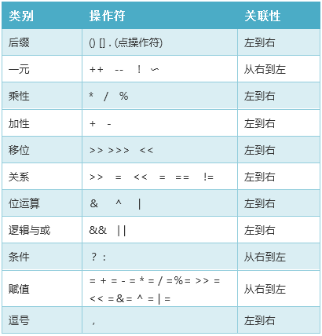

原文连接:https://www.cnblogs.com/nnzhang/p/11797842.html
计算机之所以叫“计算机”，其最基本用途之一就是运算，对应刚刚接触Java的小伙伴而言，熟悉并掌握Java中的各种运算符及其在表达式中的运算优先级是十分必要的。
算术运算
算术运算主要用来处理数学中的加、减、乘、除四则运算。是最简单、最常用的运算符。

1. 除与取模：数据做除法操作时，/ 是求商， % 是取余数。两个整数相除得到的结果是商的整数部分。
2. 自增与自减：在原数据的基础上执行加1或减1的操作。
- 单独使用：放在操作数据的前面和后面效果是一样的，如s++和++s效果一样。
- 参与操作：符号在操作数的前面表示先自增或自减，再参与操作。符号在操作数的后面表示先参与操作，后自增或自减。
//来源：公众号【时光与字节】
package BaseCode;
public class code1_1 {
public static void main(String[] args) {
int f=7;
int n=2;
System.out.printf("整数相除：f/n=%d\n",f/n);
System.out.printf("小数相除：f/n=%f\n",f/(float)n);
//两个整数相除，只能获得结果的整数部分，不是四舍五入。
//如想结果为小数，需将其中一个操作数转换为浮点数。
System.out.println("取模（求余数）：f%n="+f%n);
//自增与自减：单独使用
f--;
++n;
System.out.println("f的值:"+f+", n的值:"+n);
//自增与自减：参与操作
int xf=++f;//先自加，再赋值
int yn=n--;//先赋值，再自减
System.out.println("f的值:"+f+", xf的值:"+xf);
System.out.println("n的值:"+n+", yn的值:"+yn);
//++10 这种写法是错误的，常量不能自增或自减
}
}运行结果
整数相除：f/n=3
小数相除：f/n=3.500000
取模（求余数）：f%n=1
f的值:6, n的值:3
f的值:7, xf的值:7
n的值:2, yn的值:3关系运算
用于对两个变量或数值进行比较，无论如何运算，最终结果只能为true（真）或false（假），切勿将==误写为赋值号=。

逻辑运算
用于对布尔型数据进行操作，其结果仍为布尔型。

短路运算：以&和&&为例， | 和 || 是一样的道理。
&和&&都表示与操作，当运算两边都为true时，其结果才为true。于是，当左边为false时，即可确定结果为false，右边是否运算已对结果没有影响了。
- &：不论左边为true或false，右边都要运算。
- &&：当左边为false，右边不在进行运算。
//来源：公众号【时光与字节】
package BaseCode;
public class code1_2 {
public static void main(String[] args) {
int f = 7; //变量f初始化为7
int n = 7; //变量n初始化为7
//【短路与】运算
boolean bf = (f<5) && (f++<9);
//【与】运算
boolean bn = (n<5) & (n++<9);
System.out.println("短路运算的结果为：" + bf);
System.out.println("f的结果为：" + f);
System.out.println("未短路运算的结果为：" + bn);
System.out.println("n的结果为：" + n); //n的值变了
}
}运行结果
短路运算的结果为：false
f的结果为：7
未短路运算的结果为：false
n的结果为：8分析：
bf为短路与运算的结果，f<5为假，算式右边未计算，所以f的值没有变。
bn是与运算的结果，整个算式都需计算，所以n++被执行了，n自加1。
赋值运算
将常量、变量或是表达式的值赋给一个变量，赋值运算符主要是=（等号）。
扩展赋值运算符（+=，-+，*=，/=，%=）：都是将变量与右侧操作数进行算术运算，再将结果赋给变量。如：f+=5等同于f=f+5。
1. 一条语句可对多个变量赋值。
int a,b,c;
a=b=c=10; //正确写法
int i=j=k=10; //写法错误2. 扩展赋值运算隐含了强制类型转换，看下图。

上图的代码中，n+=x未报错，但n=n+x报错了。
两个short型相加，结果应为int型。+=赋值符隐含了强制类型转换，所以没有错。
准确的说，n+=x 应该等同于
n=（n的数据类型）（n+x）
其它运算
位运算：按二进制位进行与、或、非和异或的运算。
移位运算：对二进制位进行左移和右移的操作。
-
<<左移：左边最高位丢弃，右边补0
-
>>右移：右移一位，左边空位根据原数的符号补0或1（正数补0，负数补1）
-
>>>无符号右移：右移一位，左边空位补0
//来源：公众号【时光与字节】
package BaseCode;
public class code1_4 {
public static void main(String[] args) {
byte a=6; // 6对应二进制：00000110
byte b=11; // 11对应二进制：00001011
System.out.println("按位与运算：a&b = "+ (a&b));//结果为：2
System.out.println("左移一位：b<<1 = "+ (b<<1));//结果为：2
}
}
// 按位与运算:6%11 左移一位:11<<1
// 00000110 00001011
// & 00001011 <<1
// ---------------- ----------------------
// 00000010 00010110
// 对应数值为：2 对应数值为：22运行结果
按位与运算：a&b = 2
左移一位：b<<1 = 22条件运算：比较表达式？表达式1：表达式2
-
执行规则：先计算比较表达式的值，如果为true，结果为表达式1；否则，结果为表达式2。
int x = 59;
String s = (x>60) ? "及格" : "不及格" ;
System.out.print(s);//结果s的值为：不及格优先级
一个表达式中出现多个运算符，就有类似“先乘除后加减“这样的先后问题，通常情况下：
- 优先级高低大致顺序为：自增自减>算术运算>比较运算>逻辑运算>赋值运算；
- 如果两个运算优先级相同，则左边的表达式要比右边的表达式先处理；
- 使用小括号吧，小括号能提升算式的优先级，并且会让整个表达式逻辑结构更加清晰。如：（1+3）＋（3+2）*2；
具体可参看下表，具有高优先级的运算符在表的上面，较低优先级在表的下面。
